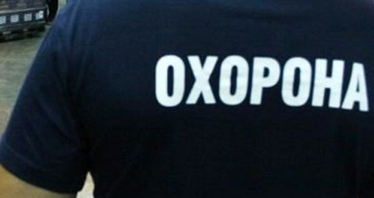

КОНТАКТНА ІНФОРМАЦІЯ
Напишіть нам і ми відповімо на всі запитання:
МИ ПРАЦЮЄМО ПО ВСІЙ КРАЇНІ
За детальною інформацією звертайтеся за телефонами, або заповніть форму зворотнього зв`язку
У відповідності з Державним стандартом професійно-технічної освіти ( ДСПТО 5169-ОК, 74, 60-2011), Центр спецпідготовки товариства « ПРИВАТ БЕЗПЕКА » здійснює професійно-спеціальне навчання за програмами курсової і індивідуальної підготовки та підвищення кваліфікації охоронців і старших охоронців для недержавних охоронних підприємств та приватних служб безпеки. Загальний обсяг навчального часу з підготовки охоронця складає 490 годин та старшого охоронця 208 годин.
Висококваліфіковані викладачі з великим практичним досвідом за допомогою правильно підібраного курсу дають можливість слухачам отримати необхідний рівень професійної теоретичної та практичної підготовки охоронця у технічно обладнаних класах, сучасному стрілецькому тирі , залі для занять з рукопашного бою та на автодромі.
Головним методом підготовки охоронців є практичні дії при виконанні реальних завдань з забезпечення безпеки фізичних осіб з оперативним вирішенням раптових нестандартних ситуацій.
За час навчання головними рисами наших слухачів - охоронців стають : непомітність, розумна ініціатива, бездоганний зовнішній вигляд, вміння уважно слухати, збереження повної конфіденційності , самодисципліна, добрий фізичний стан, навички приймати швидке раціональне рішення безпеки, відмінне володіння зброєю та прийомами рукопашного бою, практичні знання першої медичної допомоги, добрі навички керування автомобілем.
|
|
Навчання проводять викладачі провідних правоохоронних ВНЗ м. Києва, офіцери МВС України, СБ України, а також фахівці охоронних підприємств. Вартість навчання (за весь курс): 12500 грн. (ПДВ не сплачується). Після завершення навчання – свідоцтво про присвоєння кваліфікації «Охоронець» (тілоохоронець) згідно ліцензії Міносвіти України.
Напишіть нам і ми відповімо на всі запитання:
За детальною інформацією звертайтеся за телефонами, або заповніть форму зворотнього зв`язку


 Вконтакте
Вконтакте